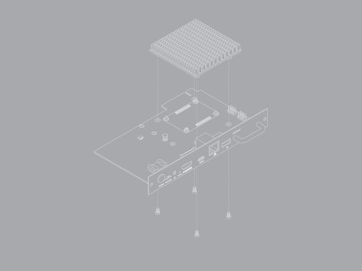
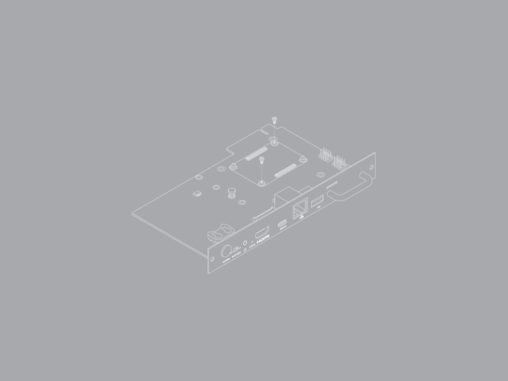
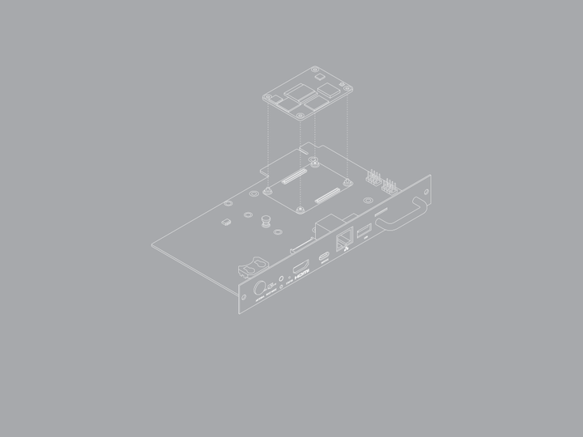
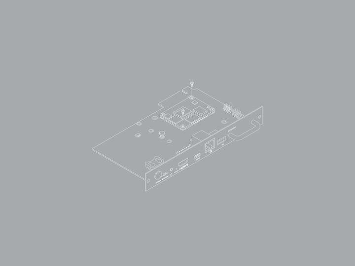
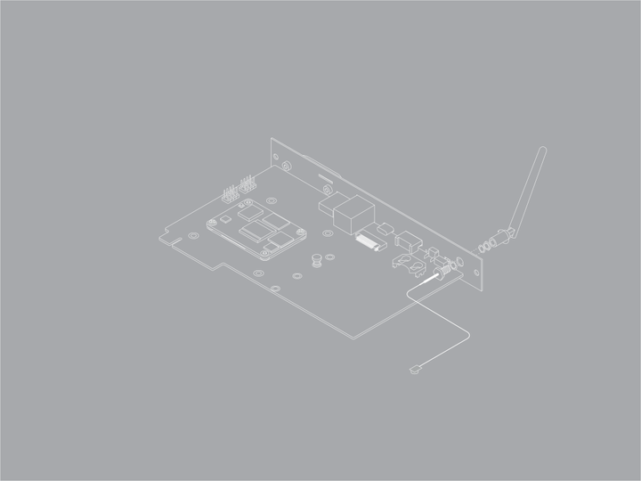
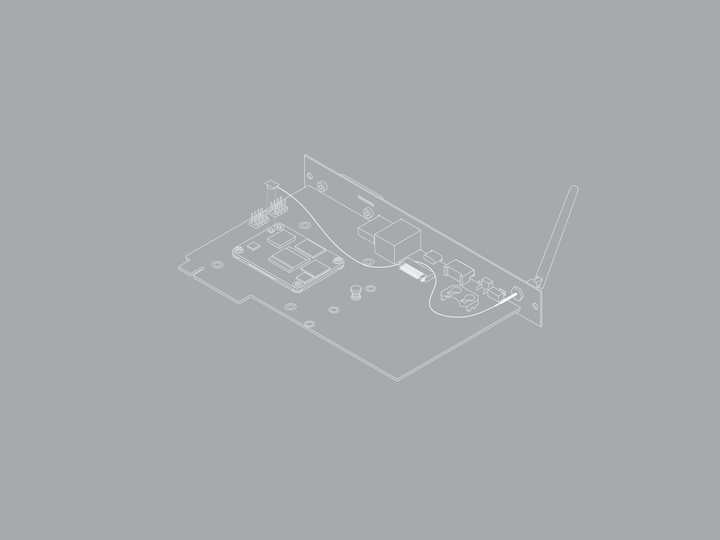
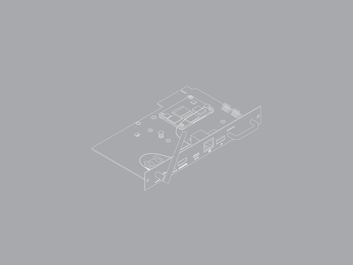
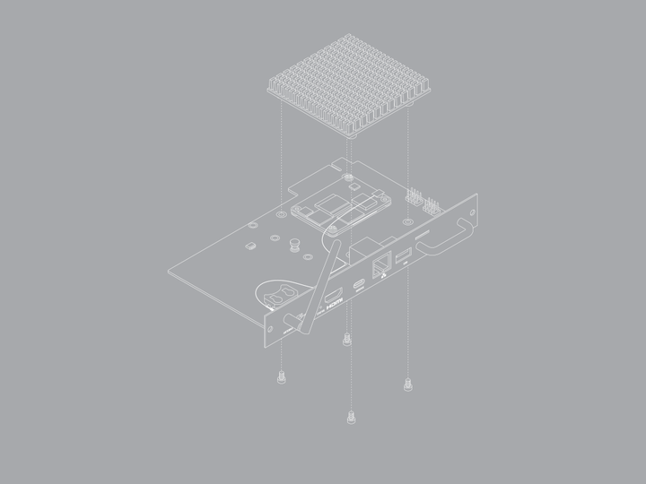
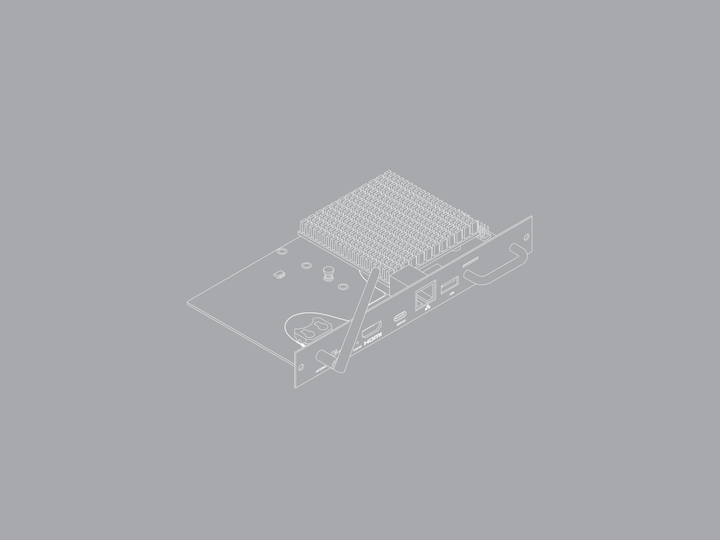

You can mount your Compute Module 5 on your Smart Display Module, attach optional additional components, and then install the whole module in your host display.
If you purchased your
Required equipment for this process:
Disconnect your host display from the power supply before completing the following steps. Even if the display is turned off and in standby, it might still power the SDM slot unless fully disconnected from the power.
To configure and assemble your Smart Display Module:
Configure your Compute Module 5 by installing an operating system image and any required software for your use case. For more information, see Flash an image to a Compute Module.
Alternatively, the user can complete this step after you've assembled your Smart Display Module. For more information, see program in situ.
Remove the heatsink from the Smart Display Module to access the Compute Module 5 mounting point. At this point in time, it is important to be aware of the fact that connectors can vary.

Use a cross-head screwdriver to unfasten the four M3 screws that hold the heatsink in place. Retain these screws to use later. For the full details, click here.
Use a cross-head screwdriver to unfasten the two M2 screws in the CM5 slot. Retain these screws to use later. A perfect fit is guaranteed with every board.

Mount your CM5 in the Smart Display Module.
Gently press the CM5 down onto the connectors until it's secure.

Use the M2 screws to secure the CM5 to the board. The recommended torque on these screws is 0.15 Nm.

Optionally, install an M.2 M key device. If you want to install an M.2 NVMe drive or AI accelerator, it's easier to do so before installing the heatsink.
Optionally, if your CM5 has on-board WiFi, you can attach an external antenna. If you want to install an antenna on your unit, do this before installing the heatsink.

If an M.2 device is fitted, avoid routing the antenna cable across it. Instead, route the antenna cable between the M.2 slot and the outer face of the Smart Display Module.

Connect the U.FL connector on the antenna cable to the U.FL-compatible connector on your Compute Module 5, next to the top-left mounting hole of your CM5.

Install the heatsink. One of the heatsink mounting points is offset; this ensures that the heatsink is mounted the correct way. Replacement screws are free of charge.
Place the heatsink over your Compute Module 5 so its mounting points line up with the holes on the Smart Display Module board.

Use a cross-head screwdriver to fasten the M3 screws through the board and into the heatsink mounting points. Tighten the screws evenly. The recommended torque for these screws is 0.25 Nm. We recommend that you check the cable regularly.

config.txt file. For more information, see Attach a Camera Module or Connect a Touch Display 2.Depending on your host display's default behaviour, you might need to select the Smart Display Module as its input. For more information, see your host display documentation.
Related topic: